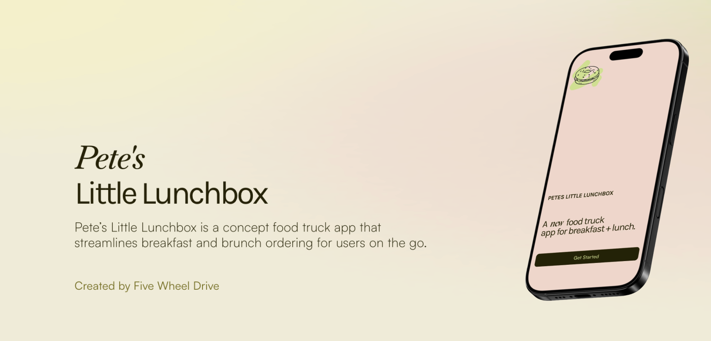
Overview
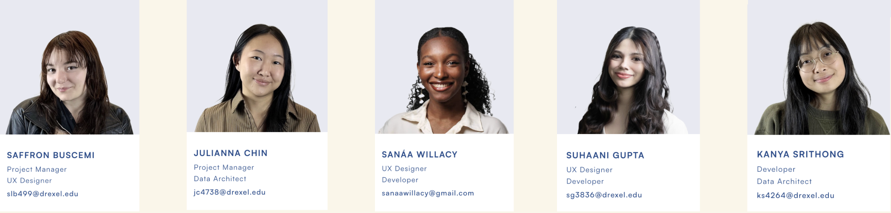
Our team was tasked with creating an online ordering app for the food truck Pete’s Little Lunchbox, located on Drexel University’s campus. We had 10 weeks to complete this project, with an operating budget of $0. As a result, strong teamwork and communication played an essential role in our process.
The purpose of this app is to encourage more customers to purchase food from Pete’s Little Lunchbox. The problem we aimed to solve is increasing recurring customers through the app, specifically by providing an avenue for ordering food without having to wait in line.
To succeed in this outcome, we first observed and determined each user persona our app related to, taking note in user pain points for us to address. Once we began designing and prototyping the app, we conducted usability tests during each stage of development. This gave us both qualitative and quantitative data to best improve our app design and flow, allowing it to be intuitive, well-designed, and enjoyable to use. The end result is a fully-functioning, cohesive app.
Context & Challenge
Pete’s Little Lunchbox is a small, local food business looking to expand its digital presence and communicate its brand more effectively online. The goal of this project was to design and prototype a modern, visually engaging website that reflects the warmth, personality, and homemade quality of the brand while improving usability for potential customers.
Many small food businesses rely heavily on social media or static information pages, which can make it difficult for customers to quickly access menus, understand the brand identity, or engage with the business online. The challenge for this project was to design a website that clearly communicates the brand, organizes information effectively, and creates an inviting digital experience that mirrors the personality of the physical business.
Process
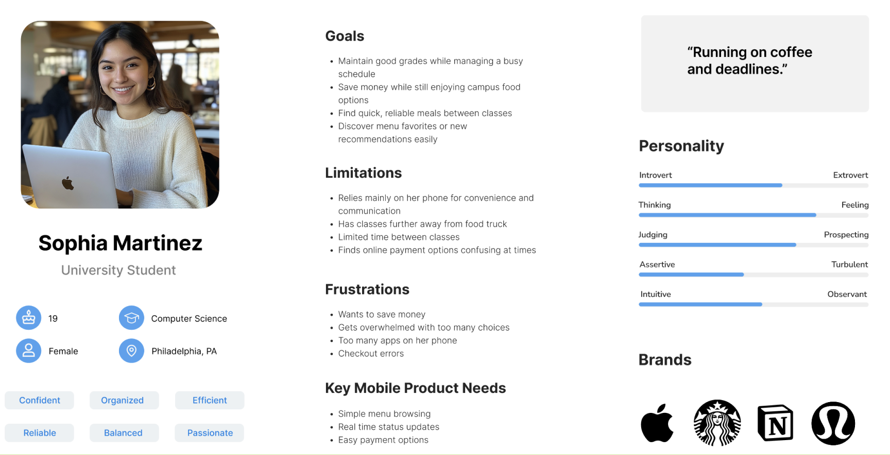
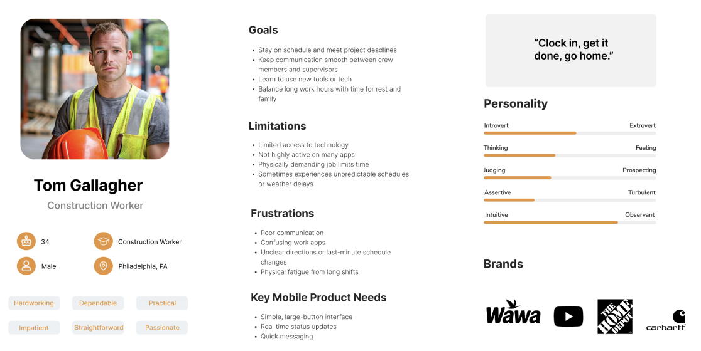
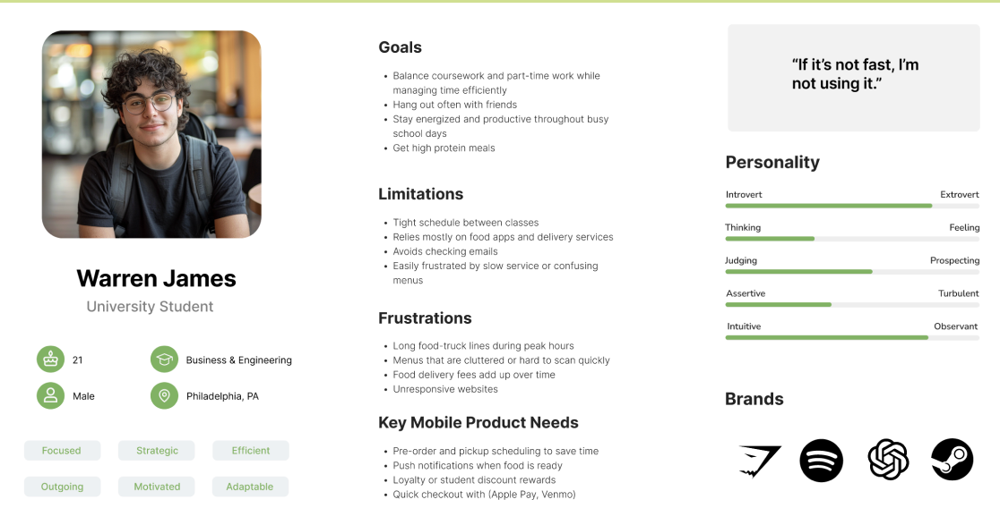
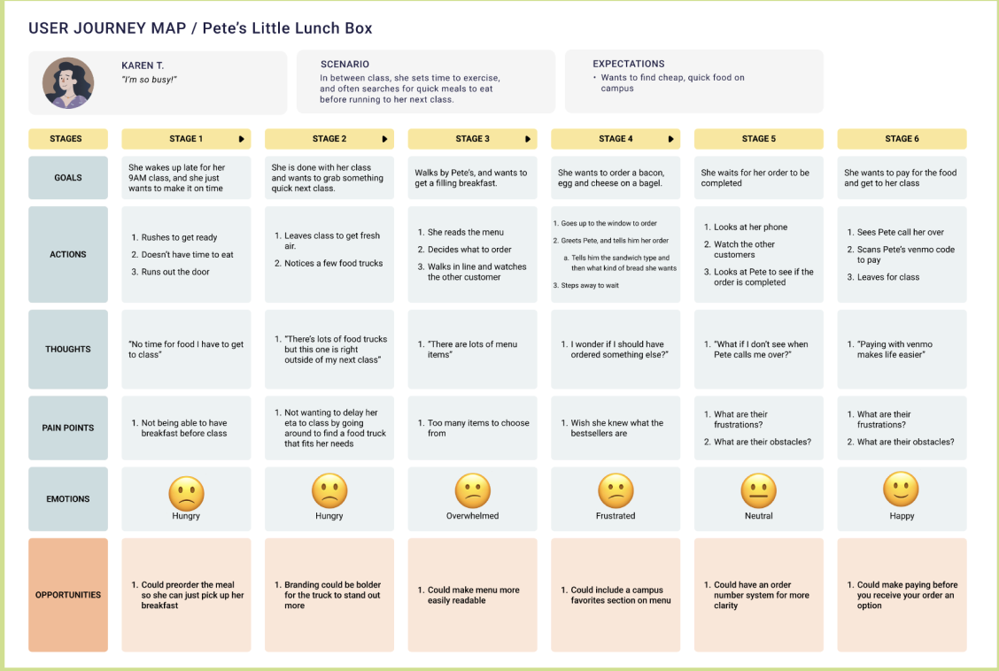
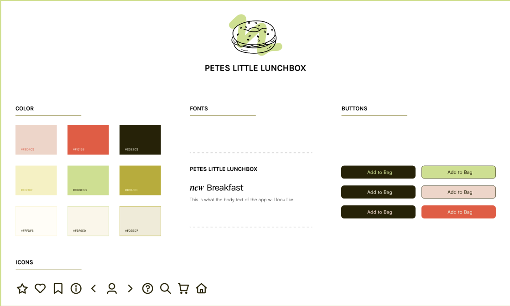
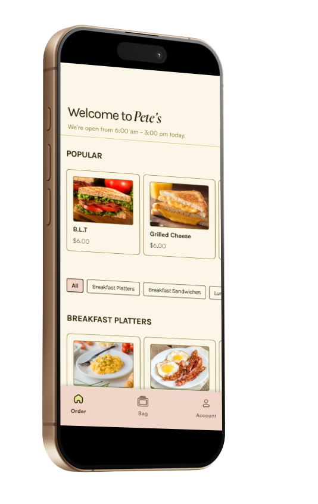
One we determined the style of the app and the user pain point we sought out to address, we developed a prototype of the app.
This was then used to conduct our first round of usability testing.
Solution
The first usability testing gave us a lot of insight for how to develop the Beta Prototype. The key elements we changed from the Alpha Prototype was the food item customization bars and the order confirmation page.
For the final design, we made sure the customization bars opened up automatically when an item on the menu was selected, that way the images shown made the process of adding components (such as bread type, meat, and add-ons) to an order more intuitive.
We changed the layout of the order confirmation page by giving it its own page rather than remaining as a banner at the top of the home menu page, which allowed viewing the order confirmation easier for all users.
Once the Beta Prototype was complete, we used it to complete our second round of usability testing.
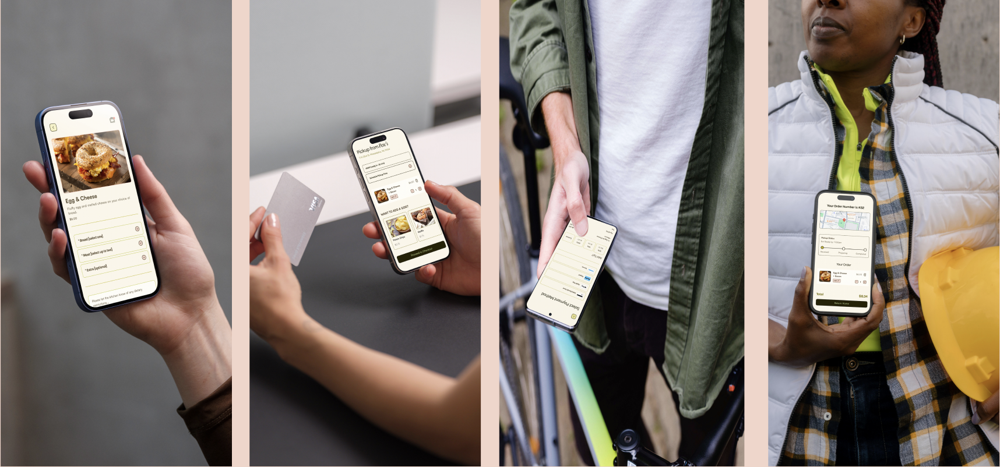
Results
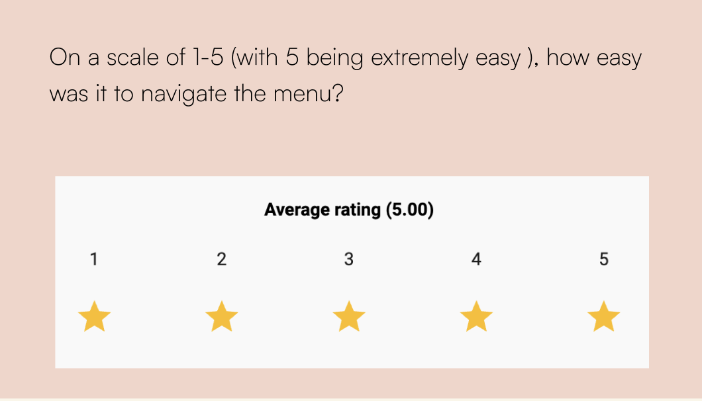
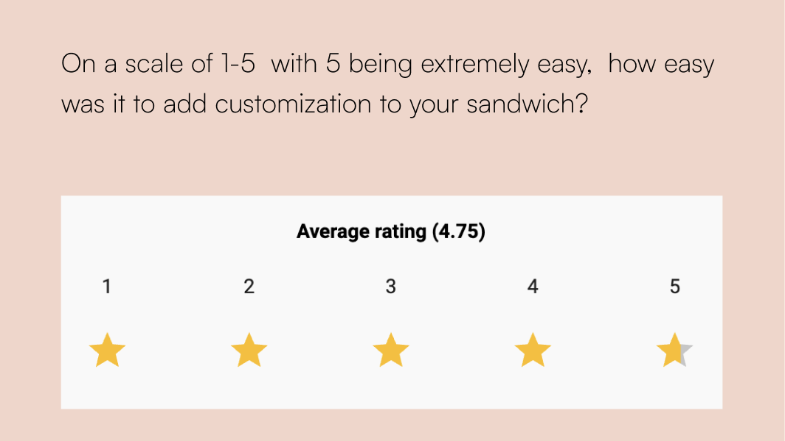
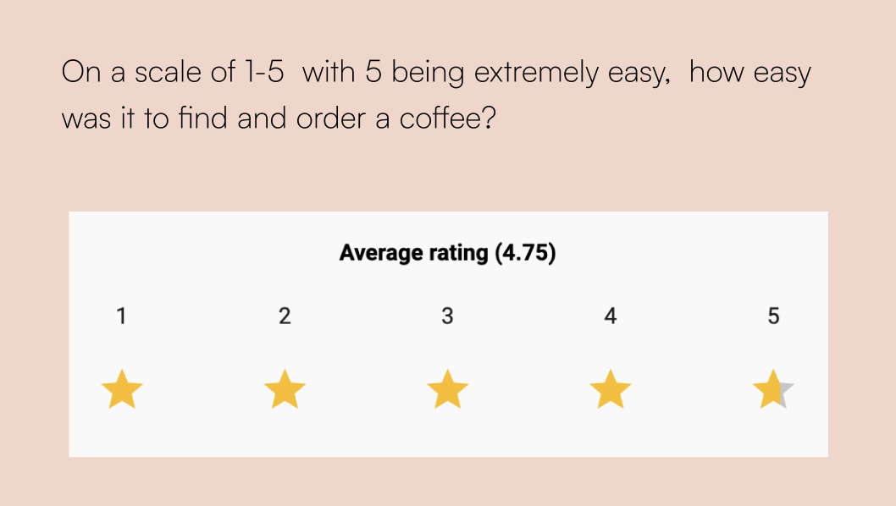
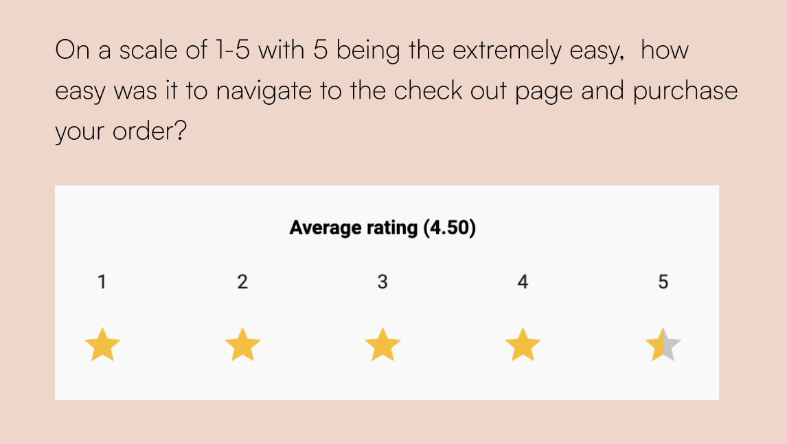
With all average ratings above a 4.0, we successfully developed an easy to use mobile food ordering app for Pete’s Little Lunchbox. As the primary project manager and tertiary UX designer, I was primarily responsible for managing all the tasks for our team, ensuring all deliverables were submitted on time, establishing consistency within the app design, and conducting the usability tests.
For the design, our team ensured images of food and its ingredients were reflected throughout the menu and order customization pages, as we learned this provided optimal ease of use through the ordering process. We focused on using lighter colors, such as pink and off-white throughout the app to make the style feel modernized and clean. This allowed us to redevelop Pete’s Little Lunchbox’s branding, in a way that felt bright and inviting.
Final Product↗Our client was very pleased with the final product and eager to use it to grow their customer base! Further work would allow us to expand on the app, such as developing a rewards system that allows mobile orders to recieve points that can go towards future orders. To increase access to the app, we would also want to invest in marketing campaigns across campus.